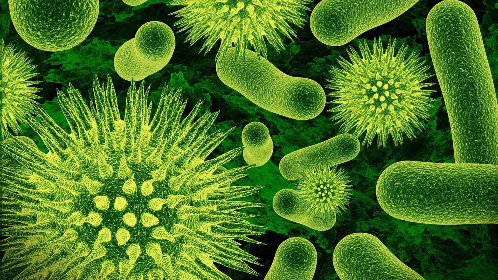
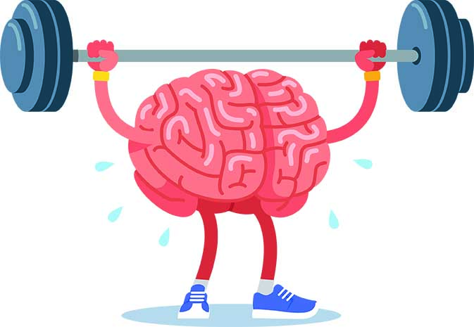

Home
Iedereen weet dat gezond eten belangrijk is, maar waarom eigenlijk? Wat moet je eten om echt gezond te eten, en wat zijn de voordelen ervan? Op deze site beantwoorden we deze vragen en geven we u ook wat gezonde recepten die u zelf kunt maken om gezonder te kunnen eten. Ook staat er op deze website een BMI (Body Mass Index) calculator waar u zelf gemakkelijk u eigen BMI kan zien doormiddel van het invullen van u gegevens.
Waarom is gezond eten belangrijk?
Als je gezond eet volgens de Schijf van Vijf, dan neem je producten die zorgen voor gezondheidswinst. Zo verlagen groente en fruit het risico op hart- en vaatziekten, darmkanker, longkanker en diabetes type 2. En peulvruchten en noten bijvoorbeeld verlagen je LDL-cholesterol. Dat helpt om je bloedvaten gezond te houden. Er bestaan voedingsnormen voor mannen en vrouwen van alle leeftijden. Die normen geven aan hoeveel vitamines, mineralen, eiwitten, koolhydraten, vezels en vetten je nodig hebt om gezond te blijven. En wat de bovengrenzen zijn van bijvoorbeeld de hoeveelheid zout en verzadigd vet. Met de adviezen van de Schijf van Vijf krijg je genoeg van alle voedingsstoffen binnen. En dus ook niet te veel.Bron: www.voedingscentrum.nl
Hoe zorg je ervoor dat je gezond eet?
Goede voeding zorgt voor genoeg energie en voedingsstoffen voor uw lichaam: eiwitten, vetten, koolhydraten, vitamines, mineralen, vezels en genoeg vocht. Met goede voeding voelt u zich fitter. En u heeft een kleinere kans op diabetes, kanker en ziekten van uw hart en bloedvaten, zoals een beroerte of hartaanval. Goede voeding is:- elke dag veel groente en fruit
- elke dag volkoren producten
- 1 keer per week of vaker peulvruchten, zoals bruine of witte bonen, kikkererwten of linzen
- ongeveer 3 eieren per week
- elke dag een handvol ongezouten noten
- elke dag een paar glazen melk of schaaltjes yoghurt (melk of yoghurt van dieren, soja of andere planten)
- 1 keer per week vis, liefst vette vis zoals haring, heilbot, zalm of makreel
- als u vlees eet: kies dan het liefst onbewerkt wit vlees. Eet bijvoorbeeld een stukje kip.
- Eet weinig rood of bewerkt vlees, zoals worst of vleeswaren.
- Rood vlees is vlees van koeien, schapen, geiten en varkens.
- weinig dranken waar suiker inzit, zoals sap en fris
- weinig producten gemaakt van witte tarwebloem, zoals witbrood, koekjes, biscuits, zoutjes
Bron: www.thuisarts.nl
Wat zijn de voordelen van gezond eten?
- Gezond gewicht Gezond eten en meer beweging: de ideale combinatie als je je gewicht optimaal wilt houden.
- Betere afweer tegen ziektes Een goede voeding met veel vitamines en mineralen is een steuntje in de rug voor je afweersysteem.
- Beter presteren Gezond eten betekent energie tanken voor het lichaam. Zoveel energie dat je tot goede prestaties komt op je werk, op school of in je vrije tijd.
- Stress beter de baas Gezond eten kan helpen beter met stress om te gaan. Met een juiste voeding voel je je bijvoorbeeld minder snel prikkelbaar.
- Goed voor je humeur Gezellig samen met familie of vrienden genieten van een gezonde maaltijd geeft een goed gevoel.
- Meer zin in bewegen Wie gezond eet voelt zich lekkerder. Daardoor krijg je meer energie en dus meer zin om extra te gaan bewegen!
- Er langer jong uitzien Gezonde voeding is dé manier om veroudering uit te stellen.
- Langer fit blijven Je spieren en botten blijven langer in conditie als je gezond eet. Hierdoor blijf je langer fit, ook als je ouder wordt.
- Kans op ziektes verkleinen Gezond eten helpt mee het risico te verlagen op hart- en vaatziekten, diabetes (suikerziekte) en kanker.
- Goed voorbeeld doet goed volgen Het goede voorbeeld geven is één van de beste manieren om bijvoorbeeld kinderen gezond te leren eten!
Bron: eganederland.nl

